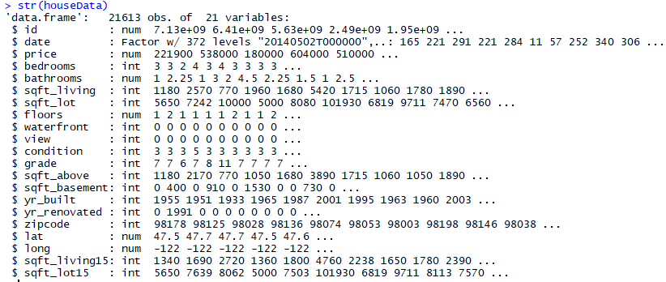
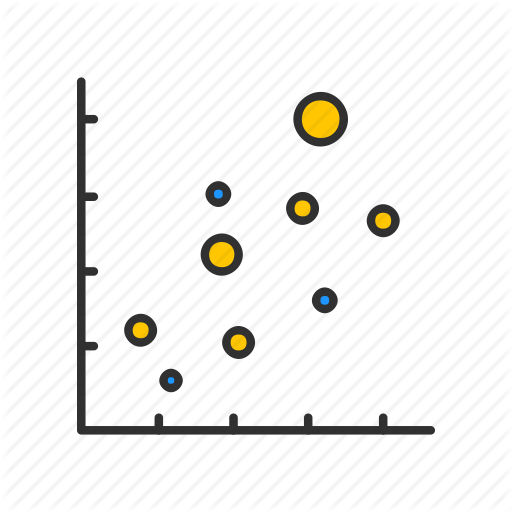

The Property Matrix
The House Price Predicting App
Developed by Ranjan, Aayush and Sonali
Guided by Prof. Srinath DK
Supported by Dr. R Selvarani (HOD)
USE CASE: CALCULATE SELLING PRICE OF MY HOUSE
Jim has a 4 bedrooms and 3 bathrooms house in a city of USA. He wants to sell the house and move to another city. Some friends are telling him that he can get as much as $2.2 Million USD, but Jim’s best friend is telling him that he can only get $1.7 million for 2,769 Sq ft house. Jim is in trouble. That is roughly 1/2 million dollars difference. Let's help Jim to find out actual selling price of his house.
Tools And Technologies
Tools to help Mr. Jim
Languages and system information
- Language - R
Tools, library and framworks
- Tool - R Studio
- Framwork - R Shiny
- Libraries - lubridate, GGally, ggplot2, hydroGOF, mvtnorm, caret, shiny
Data Source
King County house sell data
Machine learning technique and model
Regression algorithm.
Steps Involved
- Data Collection and loading data to work envirnoment.
- Preprocessing.
- Find Correlation Between dependent and independent variables.
- Plot Graph to find the pattern.
- Identify which machine learning algorithm is best fit for prediction.
- Build predictive model.
- Deploy model into production.
Data Collection
House Sales in King County, USA
This dataset contains house sale prices for King County, which includes Seattle. It includes homes sold between May 2014 and May 2015. and can be found at www.kaggle.com.
Structure of Data
Preprocessing- Cleaning,Transformation and Reduction
Data Preprocessing is a technique that is used to convert the raw data into a clean data set.
Cleaning
Filter out unnecessary columns.
requiredCols<-c('price', 'sqft_living', 'grade', 'sqft_above', 'bathrooms',
'sqft_basement', 'bedrooms', 'floors', 'waterfront', 'howOld',
'view', 'sqft_living15', 'zipcode', 'yr_renovated')
houseDataClean<-houseData[,requiredCols]
Transformation
Some column types doesn't make sense For example: Year is not numeric, it must be categorical or factor So, change the corresponding column types
House$date<-(substr(House$date, 1, 8))House$date<- ymd(House$date)
House$date<-as.numeric(as.Date(House$date, origin = "1900-01-01"))
Reduction
Removing 7, 8, 9, 10, 11 and 33 bedrooms since their individual count is less than 40 obs
index<-houseDataClean$bedrooms %in% c(0,7,8,9,10,11,33)
houseDataClean<-houseDataClean[!index,]
Feature Engineering
(Adding New Column)
houseData$howOld<-0
for(i in 1:nrow(houseData)){
if(houseData[i,]$yr_renovated==0){
houseData[i,]$howOld<-2015-houseData[i,]$yr_built
}
else{
houseData[i,]$howOld<-2015-houseData[i,]$yr_renovated
}
}
Splitting the Data Set
ratio = sample(1:nrow(House), size = 0.25*nrow(House))
Test = House[ratio,] #Test dataset 25% of total
Training = House[-ratio,]
Finding Correlation
Correlation is a statistical technique that is used to measure and describe the STRENGTH and DIRECTION of the relationship between two variables..

cor(House[,c("price", "bedrooms", "bathrooms", "sqft_living", "sqft_lot", "yr_built", "yr_renovated", "sqft_above", "sqft_basement", "sqft_living15", "sqft_lot15")])
Checking Relationship between price, bedrooms, bathrooms, sqft_living and sqft lot
plot1<-ggpairs(data=Training, columns=3:7,mapping = aes(color = "dark green"),axisLabels="show")
Checking Relationship between price, floors, waterfront, view, condition and grade
plot2<-ggpairs(data=Training, columns=c(3,8:12),mapping = aes(color = "dark green"),axisLabels="show")
Checking Relationship between price, yr built, lat and long
plot3=ggpairs(data=Training, columns=c(3,15,18,19),mapping = aes(color = "dark green"),axisLabels="show")
Plots 1,2 and 3 shows the correlation between each variables and they are:
- corr between price vs sqft_living: 0.701
- corr between price vs bathrooms: 0.524
- corr between price vs bedrooms: 0.303
- corr between price vs sqft_lot: 0.0972
- corr between price vs floors: 0.282
- corr between price vs waterfront: 0.324
- corr between price vs view: 0.406
- corr between price vs condition: 0.0466
- corr between price vs grade: 0.654
- corr between price vs yr_built: 0.0366
- corr between price vs lat: 0.304
- corr between price vs long: 0.0161
We decided to choose 5 variable that are sqft_living, bathrooms, grade, view and lat. which are highly correlated and will help for better prediction. we will verify this using box plots in next section.
Note: Since the features zipcode, latitude, and longitude do not work with scatter plot well, we will deal with them separately.
Box Plot
Finding the pattern and verify selected variables
boxplot1=boxplot(price~sqft_living, data=Training,
col=(c("gold","darkgreen")),
main="Price vs. Sqft_living", xlab="Sqft_living", ylab="Price")
Price vs. Sqft_living ->> Nice correlation, as sqft increases, price increases as well.
boxplot2=boxplot(price~bathrooms, data=Training,
col=(c("gold","darkgreen")),
main="Price vs. Bathrooms", xlab="Bathrooms", ylab="Price")

Price vs. Bathrooms ->> Nice correlation, as of bahtrooms increases [median of bar plot], price increases as well, with an expection when bathroom=7
boxplot3=boxplot(price~grade, data=Training,
col=(c("gold","darkgreen")),
main="Price vs. Grade", xlab="Grade", ylab="Price")
Price vs. Grade ->> Nice correlation, grade increases [median of bar plot], price increases as well
boxplot4=boxplot(price~view, data=Training,
col=(c("gold","darkgreen")),
main="Price vs. View", xlab="View", ylab="Price")
Price vs. View ->> Nice correlation, view increases [median of bar plot], price increases as well
boxplot5=boxplot(price~lat, data=Training,
col=(c("gold","darkgreen")),
main="Price vs. Lat", xlab="Lat", ylab="Price")
Price vs. Lat ->> This is more like a normal dist relationship, price peaks around when lat= 47.64 and declines afterwards, but this can be modeled easily. we would say Lat explains the price as well.
Each of those box plots shows that those variables might be directly related in predicting house prices.
To strengthen Our hypothesis we also computed correlation between prices and variables, and our top 5 picks are supported with correlation coefficients as well.
After analysing the pattern obtained, we decided to go with Linear Regression ML Algorithm.
Our Basic Model
Using the predictor sqft living for predicting house prices
plot(Training$sqft_living,Training$price, main="Sqft_Living vs. Price of House", xlab="Sqft_Living", ylab="Price of House", pch=19)
Since this scatterplot is too crowded - we will plot aggregated vectors to see the relationship between 2 variables.
vec_price_sqftliving <-aggregate(price~sqft_living, FUN=mean, data=Training)
plot(vec_price_sqftliving)
scatterplot1<-recordPlot()
Plot does not show that price and sqft_living are linearly related. It more looks like an exponential relationship.
linear_model<-lm(vec_price_sqftliving$price~vec_price_sqftliving$sqft_living)
expo_model<-lm(log(vec_price_sqftliving$price)~vec_price_sqftliving$sqft_living)
| Model | Multiple R-squared | Adjusted R-squared |
|---|---|---|
| linear_model | 0.6972 | 0.6969 |
| expo_model | 0.7886 | 0.7884 |
plot(log(vec_price_sqftliving$sqft_living),log(vec_price_sqftliving$price), main="Log of Sqft_Living vs. Log of Price of House", xlab="Log Sqft_Living", ylab="Log Price of House", pch=19)
scatterplot2<-recordPlot()
we are using aggregated data as opposed to using the raw data. By "aggragated" data, we will take the mean for all the same sqft_living. It makes the graph cleaner.
Major differences between two scatterplots are: 1) 2nd plot which has log transformation seems to have squeezed the data - x axis ranges from 6 to 10 and y axis ranges from 10 to 17 as opposed to ranging from 100 to 10000 in x axis and 75000 to 7060000 in y axis in scatterplot1.
So the difference between different data points is smaller. 2) Relationship between variables in plot 1 seems to be exponential and in plot 2 it seems to be linear. 3) Plot 2 clustered the data points in mid range of both axis and plot 1's data points are clustered around lower range of both axis
OLS performs poorly when there are big outliers and in scatterplot 1 there are many because of exponential behavior of the data. we would pick Model2 (can be seen in scatterplot2) because a linear line can explain the data more accurately since data looks linear.
In search of max accuracy and min error
R^2, MSE, SEE, Residuals
| Model | R-squared | MSE | Comment(MSE) | Comment(R^2) |
|---|---|---|---|---|
| M1 | 0.5010955 | 74430190588 | ||
| M2(log)M1 | 0.4569825 | 84298554161 | ||
| M3 | 0.5611 | 56924153087 | MSE for M2 is 48.09 % more than M3. Therefore We can safely suggest that M3 is better than M2 | R^2 for M3 is 22.79167 % better than M2 |
| M4 | 0.753092 | 40148489344 | MSE for M3 is 41.78 % more than M4 | R^2 for M4 is 34.20836 % better than M3. |
| M5 | 0.7552 | 39790512156 | MSE for M4 is 0.9 % more than M5 | |
| MX | 0.7734 | 36172754864 | MSE for M5 is 10 % more than MX |
Deploying Model into product
Shiny is an open source R package that provides an elegant and powerful web framework for building web applications using R.
- ui.R- It helps to provide user interface.
- server.R- It is used to write logic.
UI.R syntax
ui.R syntax
library(shiny)
# Define UI ----
ui <- fluidPage(
)
# Define server logic ----
server <- function(input, output) {
}
# Run the app ----
shinyApp(ui = ui, server = server)>server.R syntax
server.R syntax
# Server logic ----
server <- function(input, output) {
output$map <- renderPlot({
percent_map( # some arguments )
})
}
# Run app ----
shinyApp(ui, server)>